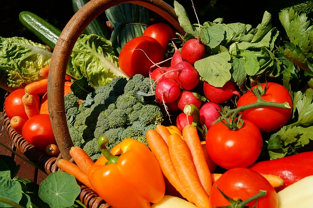
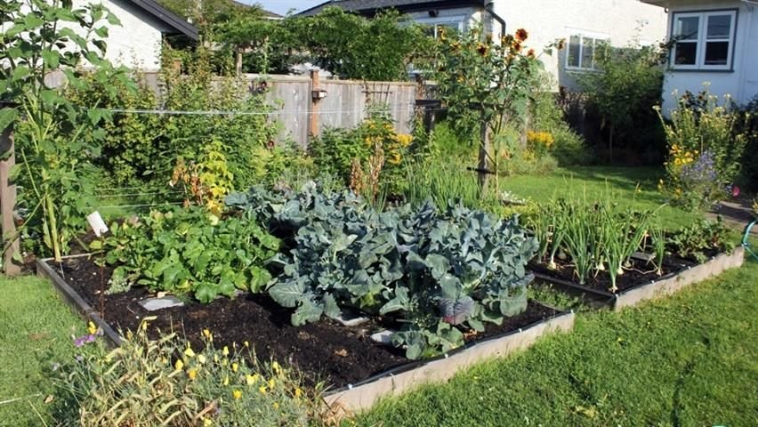
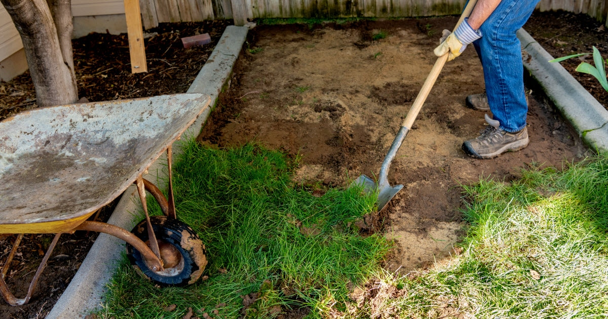
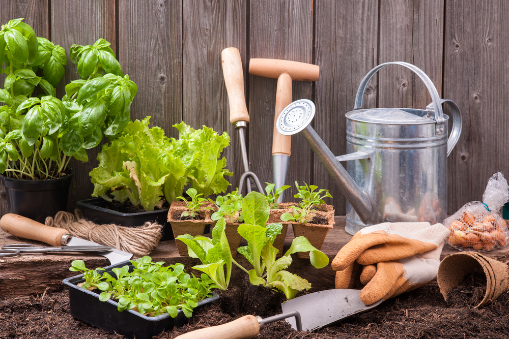

Lawn to Garden Project Pitch
A guide to transforming a suburban lawn into a sustainable garden.
Conjecture
Global supply chains provide most food in the United States. The government response to the Covid-19 pandemic demonstrated this system’s weaknesses. Basic food items became harder to obtain and shelves were empty. Large scale farming and the distribution process have detrimental effects on the environment, causing unsustainable resource consumption and climate change. The solution is an increase of local sourcing in food products and self sufficient cultural norms. The training manual we will create teaches individuals to convert their grass lawn to a food garden for personal consumption.

Definition
Gardening techniques and plant selection depend on the climate of the region. This manual will focus on the best practices in the state of Pennsylvania - specifically, in the areas surrounding Pittsburgh and Philadelphia. Resources will be provided on the legality of urban farming, the process of converting lawn to garden, and tips for growing crops from seed to harvest. The guidelines given will be general, and can be applied to many different types of plants that can be grown in Pennsylvania's climate zones. In the future, alternative versions of our Pennsylvania manual can be created for different climates and linked to ours.

Quality
Opportunities to reduce the man-made effects on the environment have many benefits. Self sufficient food supplies give the grower independence from commerical farming and reduce the amount of money they spend on food. Growing a portion of one’s food was more common in the past, providing sustenance to large families with low income. Our manual helps provide a way for Pennsylvanians to spend less money and to divest from a system with negative environmental effects. The cost of doing nothing is high, and the cost of this project for growers is low. The main stakeholders in this situation are the general public, corporations involved with large scale farming, local governments, and the growers themselves.

Moving Forward
The plan to complete the project can be split into research and design. Research must be completed first and involves gathering the information to be conveyed to the audience. The legal requirements to grow food in each zoning location, plans for effective lawn conversions, and garden plants suitable for Pennsylvania are the information to be gathered. The resources for each of these categories will be prioritized and organized. Lastly, the information will be placed in the code of our website and refined for aesthetic purposes.

generated by Pitt Fuego
Why make a spark when you can light a fire?